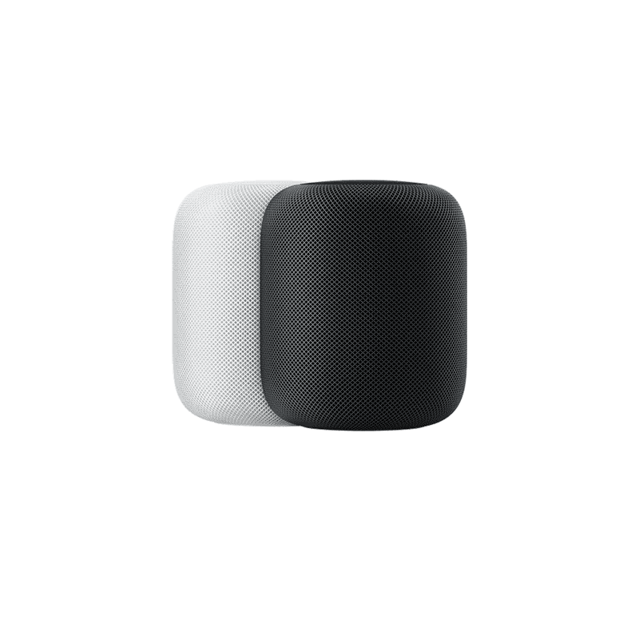
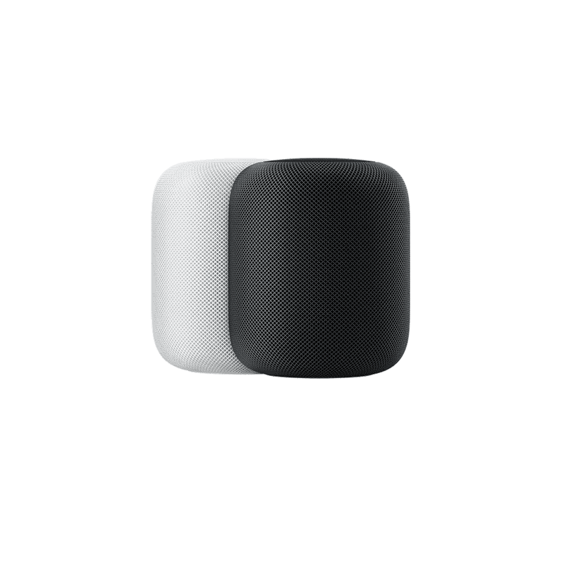
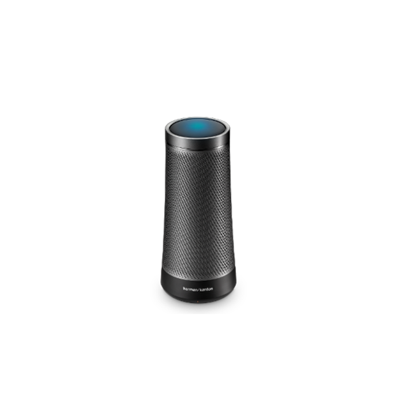
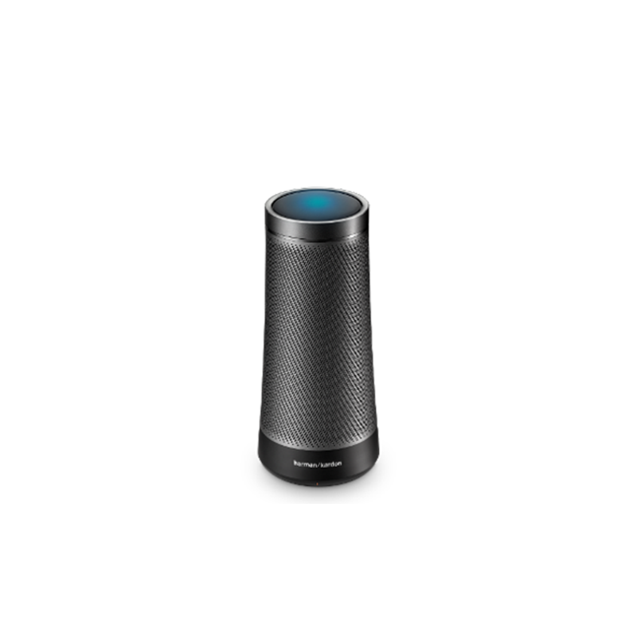

Somebody's watching me
Embodying ethical design for smart speakers
Siri, Alexa, Google, and Cortana are household names: these are the AI that are increasingly entering electronics consumers' homes as smart speakers provided by some of the biggest tech companies in the world. Apple, Amazon, Microsoft, and Google have all created personal assistant programs with conversational interfaces that can answer questions, read recipes, tell you the weather, play music and games, set alarms, and speak reminders, among many, many other features.


 


 
